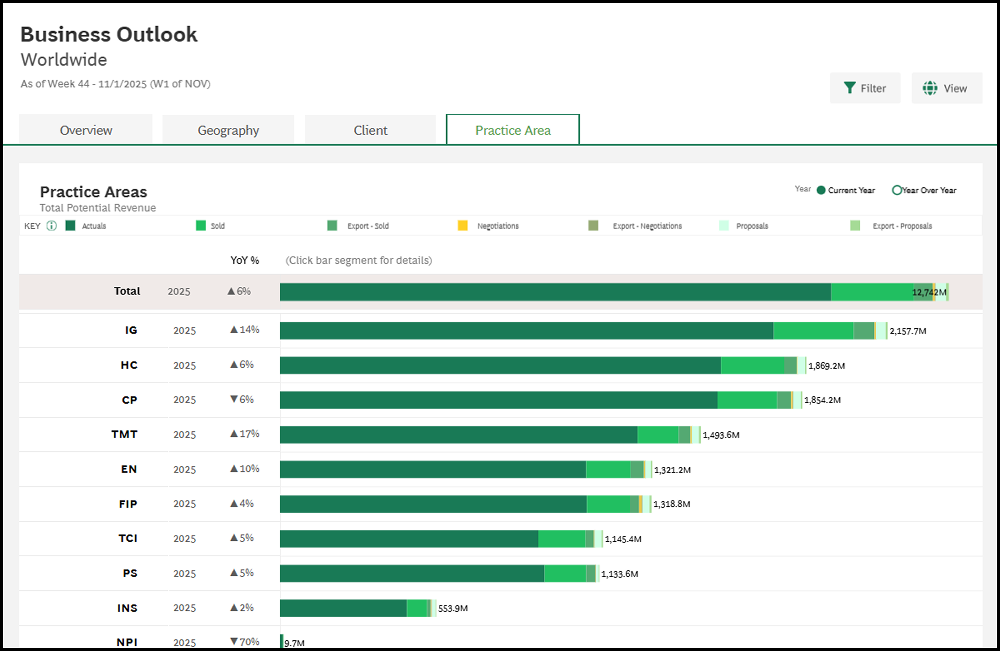
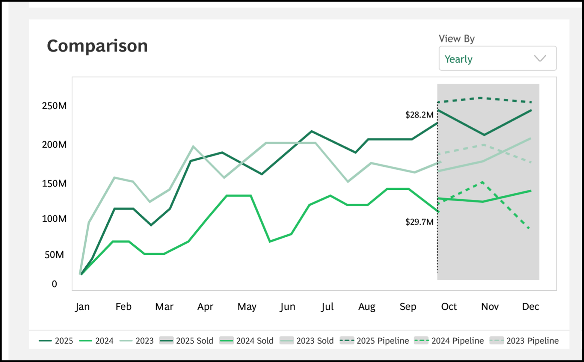
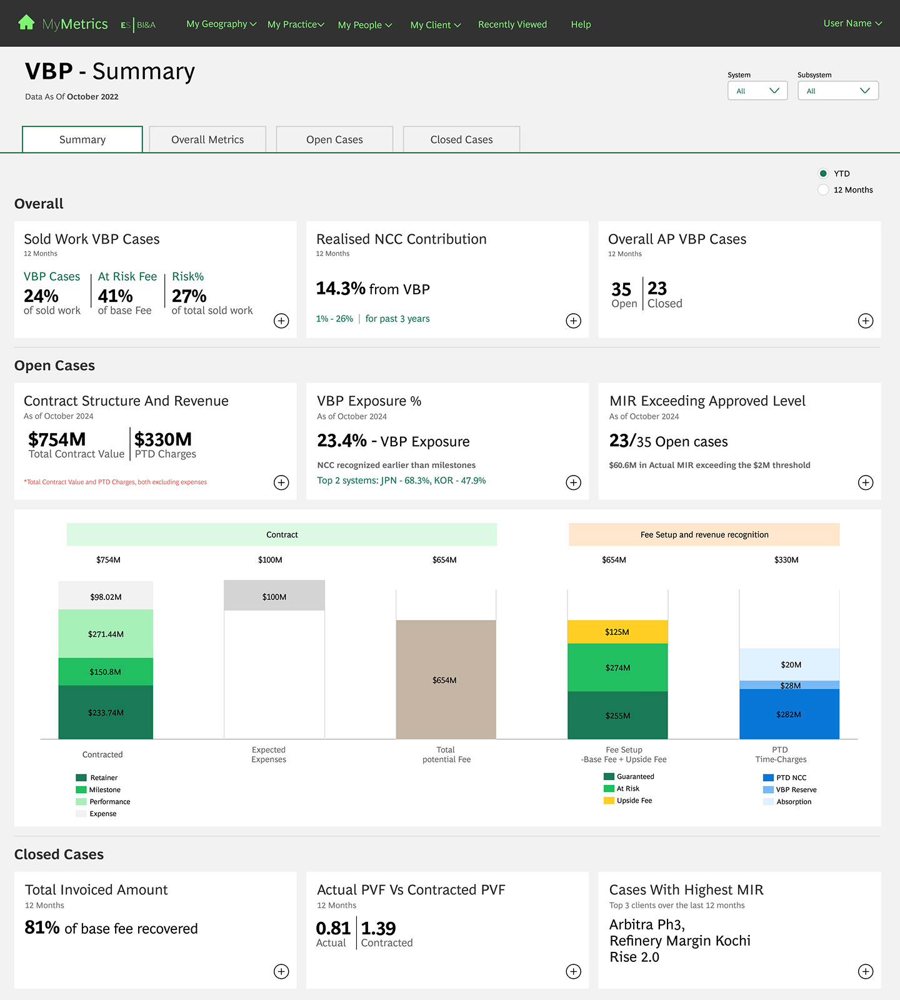
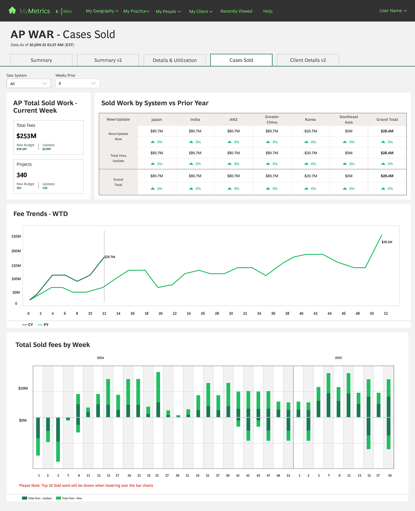
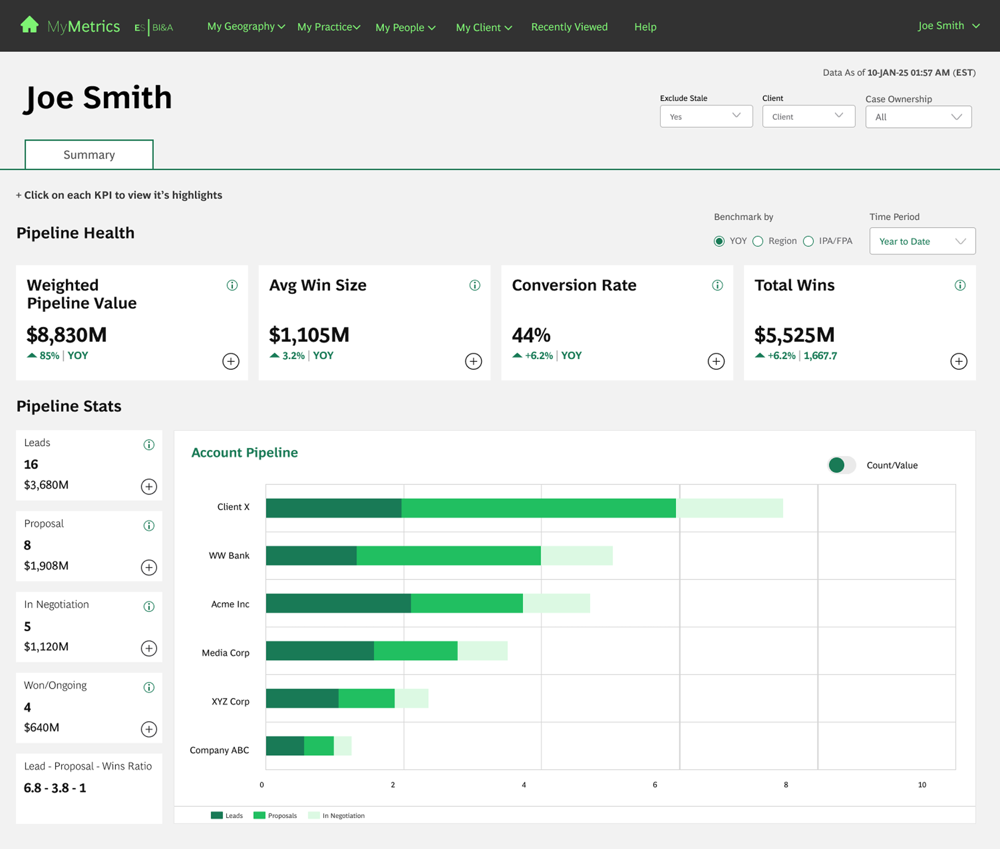
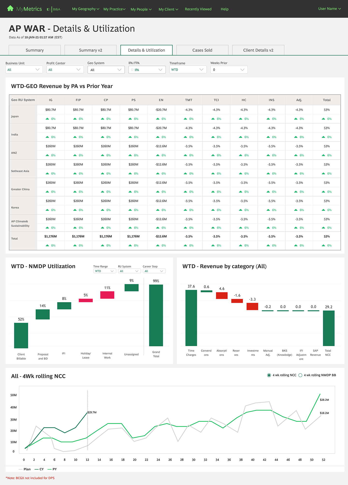
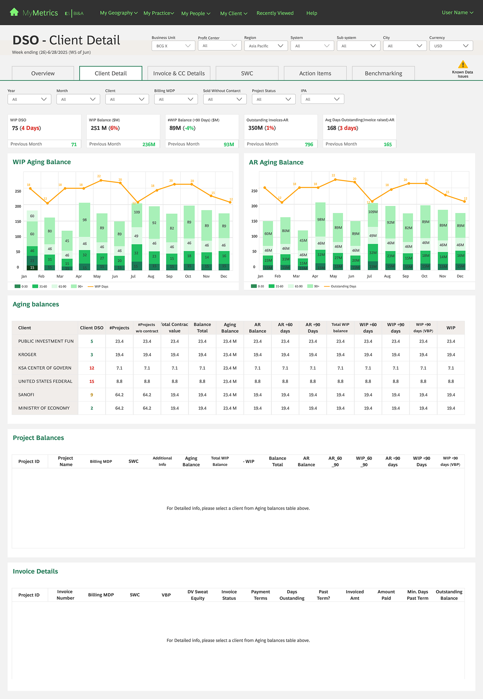
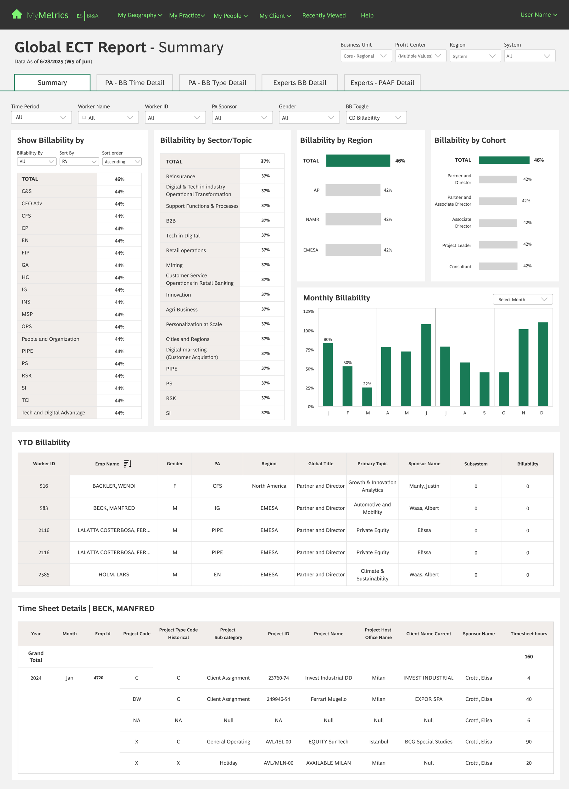

💼
UX Portfolio
Nov 2023 – Nov 2025
BCG Engagement Summary
Ramakrishna Pabbathi · UX Lead · KPMG India
Ramakrishna Pabbathi · UX Lead · KPMG India
BCG leadership was operating with fragmented data infrastructure — every decision carried hidden latency costs.
Leadership decisions were delayed due to fragmented dashboards — no single pane of glass. Directors switched between 5–7 reports to form a complete picture of performance.
Heavy reliance on Excel and PowerPoint for consolidation — analysts spent hours each week reformatting and stitching data before leadership reviews.
No shared KPI taxonomy across squads — same metrics reported with different names, granularities, and refresh cadences. Inconsistent reporting eroded trust.
Decision latency was measurable — weekly leadership syncs were routinely held back awaiting consolidated numbers. Reactive, not proactive intelligence.
This is what the redesign was solving for — not aesthetics, but operational intelligence at speed.
Directional — based on stakeholder feedback comparing pre/post navigation steps to locate key metrics in leadership reviews.
Navigation depth reduced from 4 to 2 levels — validated in usability sessions where time-on-task dropped significantly across all tested flows.
Stakeholders shifted from manual report-building to dashboard-first decision-making — confirmed by BI&A Senior Director post-delivery.
Eliminated manual reporting workarounds across all squads — consistent KPI taxonomy and shared component library reduced duplication and maintenance overhead.
Recognition: Awarded Performer of the Month by the Senior Director of BI&A for measurable improvement in dashboard efficiency and design quality — the first time a UX role received this recognition in the engagement.
These weren't inherited requirements — they were deliberate design choices I owned, justified, and defended to stakeholders.
Original IA required 3–4 clicks to reach key metrics. I pushed for a flatter hierarchy — resisted by stakeholders who wanted more granularity, but validated by user testing showing faster task completion.
Prior design surfaced all metrics simultaneously. I redesigned to show critical KPIs using a hybrid of layered approach and progressive disclosure by load and reveal the detail-on-demand, a direct response to users saying "I can't find what I'm looking for."
Each squad had its own taxonomy, naming conventions, and metric groupings. I defined a shared hierarchy — level 1 (strategic), level 2 (operational), level 3 (drill-down) — applied consistently.
Tableau constrained interactivity (no custom overlays, limited animation). I designed within those limits — using parameter actions, containers, and layout zones to approximate native UX patterns without custom dev.
BCG dashboards weren't simple charts — they were dense, multi-dimensional operational tools. The design challenge was cognitive, not visual.
Leadership needed 15–20 metrics visible simultaneously. I used visual grouping, typographic weight hierarchy, and colour coding to create scannable layers — not just a grid of numbers.
Not all metrics deserve equal visual weight. I defined a P1 / P2 / P3 metric tiering — P1 metrics are always visible and prominent, P2 are one click away, P3 are in drill-down only.
Designed persistent, context-aware filters — region, date range, and practice area — that held state across navigation, eliminating repetitive re-filtering that users described as their #1 frustration.
Two distinct use modes: senior leaders scan (summary KPIs, RAG status, trend arrows in under 30s) vs analysts deep-dive (raw tables, drilldowns, exports). Same dashboard, two designed entry points.
Core insight: Data UX isn't about making charts pretty — it's about matching the dashboard architecture to the cognitive model of the user under pressure.
Two design directions were developed, tested with users, and presented to stakeholders for alignment — not one prescribed solution.

Single practice area view — required multiple tab switches for a complete regional picture

All metrics visible simultaneously. Users reported difficulty locating the key metric they needed.

Progressive disclosure — critical metrics on load, drill-down on demand. Reduced cognitive load.
Stakeholders needed a section to seamlessly track three core revenue metrics simultaneously:
A compact dashboard supporting four components of analysis:

A multi-line comparison chart chosen to allow simultaneous tracking of Actuals, Sold, and Pipeline across three years — eliminating the manual cross-referencing that was creating decision latency for leadership.
Design doesn't happen in a vacuum. Here's a real conflict — the pushback, my reasoning, and how it resolved.
The Performance Management squad's Product Owner insisted all 18 KPIs appear on the primary view — no tabs, no drill-downs, no hiding. "Our users are senior leaders. They need everything."
I presented usability testing evidence: users on the "all visible" prototype took 2× longer to locate their primary metric. Cognitive load — not missing data — was the actual barrier to speed.
We ran a structured A/B comparison with 4 actual users from that squad. Both designs were tested against the same task: "Find last week's revenue shortfall." Progressive disclosure won on speed (avg. 34s vs 71s). The PO aligned.
Stakeholder pushback on simplification is usually fear — fear that their requirements won't be met. The answer isn't to argue design principles. It's to put data in the room. Testing is the most persuasive design artefact.
High-fidelity Tableau dashboards delivered across all four squads — used daily by BCG leadership globally.






Screenshots available in session — NDA applies to full Figma source files